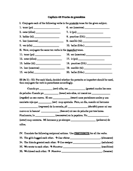
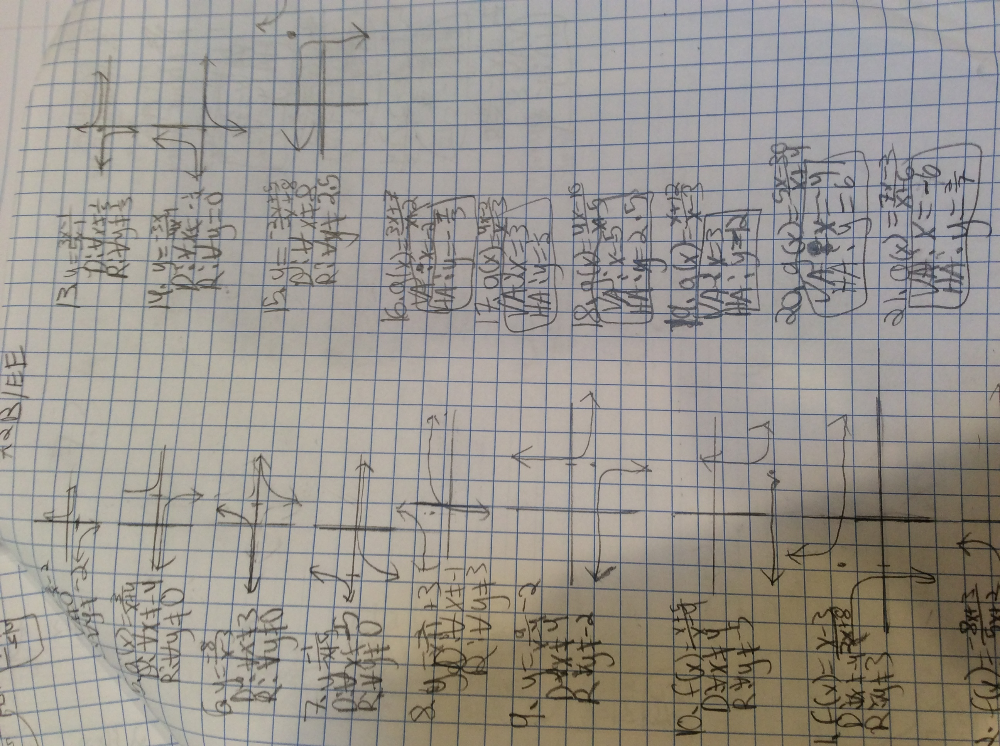
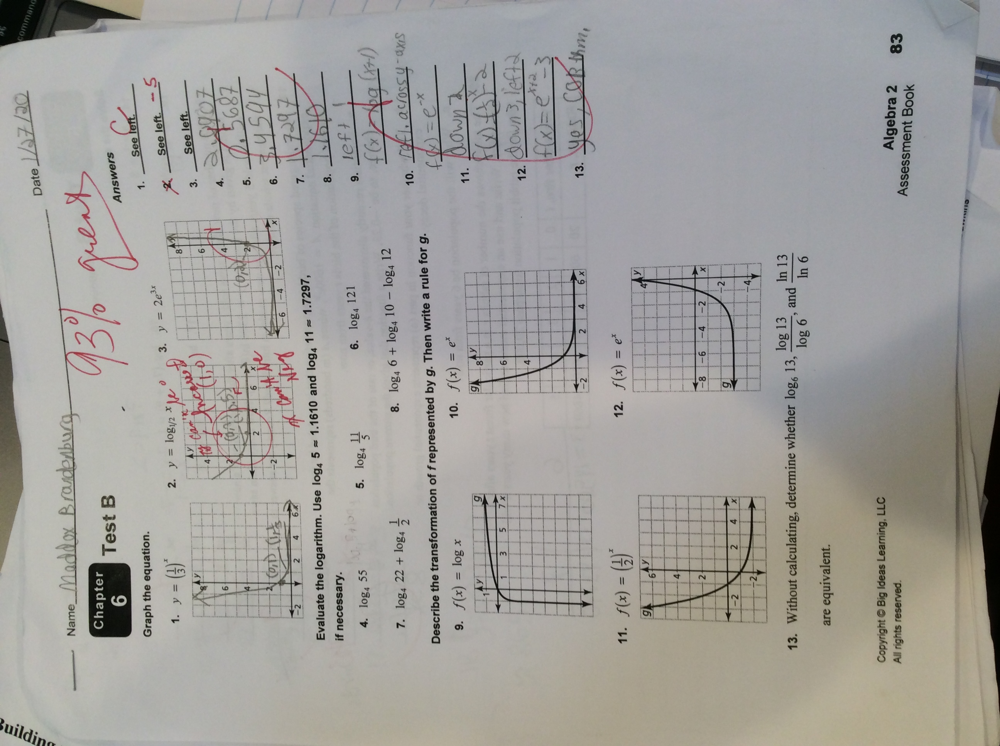
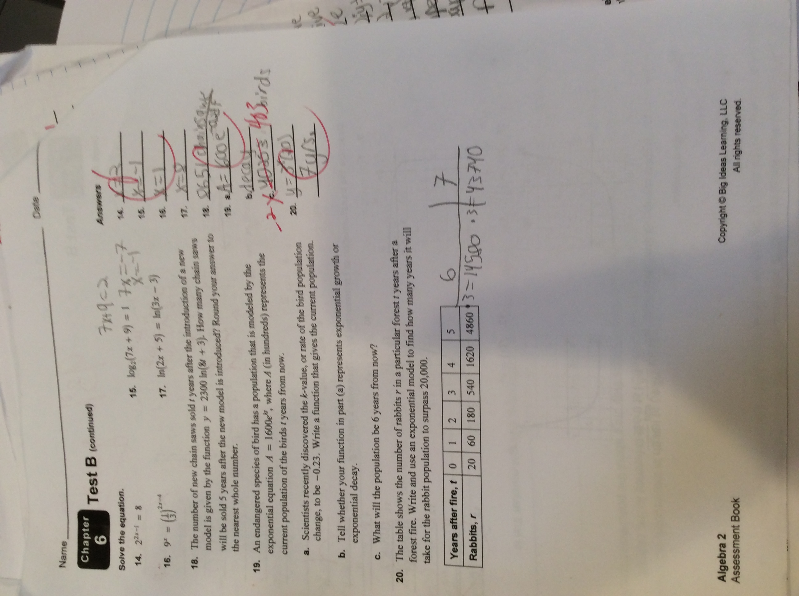

Artifacts
Literature
The artifact that I chose for Literature was my Scarlet Letter poem. This represented my strength. I put my mind to writing this and planned out the writing of it and produced a higher quality project. This also represented the Habit of Mind of Persisting. I chose this because I do not feel like I have a natural poetry writer, however, I had to persist through failure in my poem and produce a good project.

Scarlet Letter Poem
Social Studies
The artifact that I chose for Social Studies was my Great Awakening Essay. This shows my strength because I focused on producing a higher quality writing project, and recieved a desirable grade. This also represents the Habit of Mind of Thinking Flexible. I chose this because if the point I was trying to prove was not supported by the text, I would have to think flexibly, and possibly choose a new argument.
Great Awakening Essay
Spanish
The artifact that I chose for Spanish was my Preterite v. Imperfect test. The reason I chose this was because I studied hard for it, and got one of the better grades in the class. Tis also represents the Habit of Mind of Thinking About My Thinking.I chose this because at some points durig this test I would be unsure of my answers. However, I would then go back and think about my thought process that led me to that answer, and try to find errors in my thought process.

No Name Given, https://www.pinterest.ca/pin/81768549472563676/
Test like test I took
Math
The artifacts that I chose for Math were my notebook, a test, and a homework packet. These represent my improving organization on my homework and notes translating into better results on my tests. These also represent the Habit of Mind of Striving for Accuracy because if I made a mistake in the homework, I would strive to figure out the problem by the test day. A success that I have had in Math was working on log functions. These were my main stuggle last year, and this year I have improved on them. A challenge I have had has been spreading out the completion of my homework over the week. A future goal I have for math will be memorizing the unit circle. This will help me for the rest of the year and in high school

Math Homework


Math Notebook
 Math Test
Back